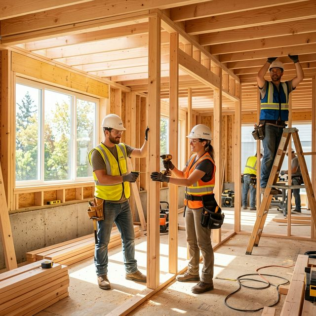

Our Mission
Restoring more than just property. We restore lives.
A Legacy of
Reliability & Trust.
Since 2011, RestoreX has been at the forefront of disaster recovery. We started with a single truck and a commitment to helping our neighbors during their darkest hours.
Today, we are a multi-state operation with specialized teams in fire, water, and structural restoration. Our core values remain the same: integrity, speed, and uncompromising quality.
 Fully Licensed & Bonded
Fully Licensed & Bonded- IICRC Certified Technicians
- Direct Insurance Billing

Meet Our Leadership
James RestoreX
Founder & CEO
Sarah Mitchell
Claims Director
Robert Chen
Operations Lead
Our Journey
2011
Founding
RestoreX launches with one truck and three technicians in Queens, NY.
2018
Interstate Expansion
We expanded operations to handle multi-state disaster recovery mobilizations.
2026
Portal Launch
Launch of the RestoreX Client Portal for real-time project tracking.
Unyielding Integrity
We don't take shortcuts. Every claim is documented with scientific precision.
Radical Speed
Disaster doesn't wait, and neither do we. Sub-2 hour mobilization guaranteed.
Global Standards
Leveraging international best practices and salvations for local recovery efforts.